業種ごとに、福祉事業所向けホームページ制作サービスの料金・対応範囲・公開後のサポートを、公式情報をもとに比較しています。
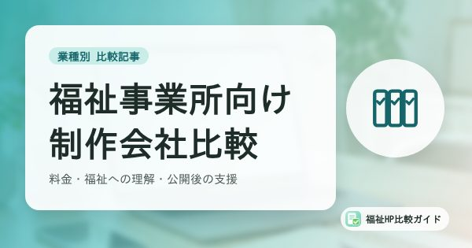
4社を比較2026年7月時点の公式情報福祉事業所向け
福祉事業所全般に対応したホームページ制作サービスを、料金・福祉への理解・公開後の支援で比較。
比較を見る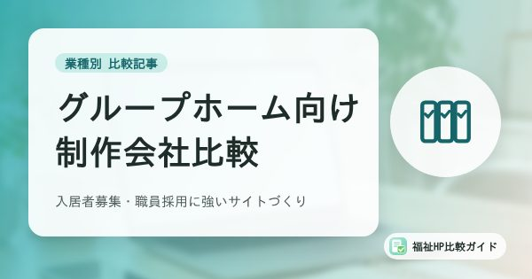
4社を比較2026年7月時点の公式情報障害者グループホーム向け
入居者募集や職員採用に強いホームページを作れる制作サービスを、料金と対応範囲で比較。
比較を見る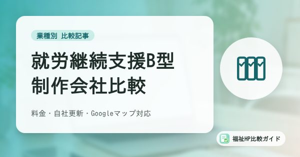
4社を比較2026年9月時点の公式情報就労継続支援B型
B型事業所向けの制作サービスを、料金・自社更新・Googleマップ対応などの条件で比較。
比較を見る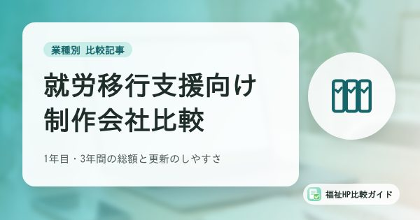
4社を比較2026年11月時点の公式情報就労移行支援
就労移行支援事業所向けの制作サービスを、初期費用・月額・3年間の総額・更新のしやすさで比較。
比較を見る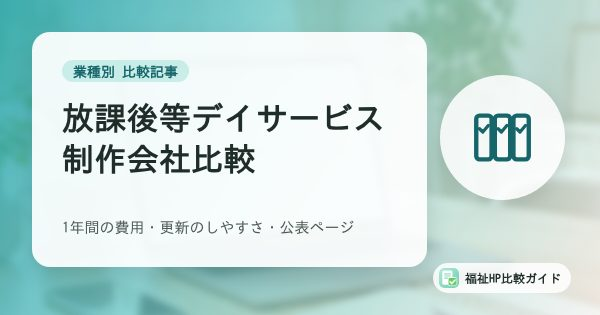
5社を比較2026年11月時点の公式情報放課後等デイサービス
放デイ向けの制作サービスを、1年間の費用・更新のしやすさ・放デイの制作実績で比較。支援プログラムや評価結果の公表など、放デイ特有の掲載内容も解説。
比較を見る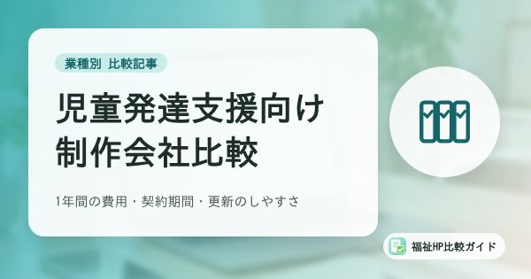
5社を比較2026年11月時点の公式情報児童発達支援
児童発達支援の事業所向けの制作サービスを、1年間の費用・契約期間・更新のしやすさで比較。無償化や園との通い方など、児発ならではの掲載内容も解説。
比較を見る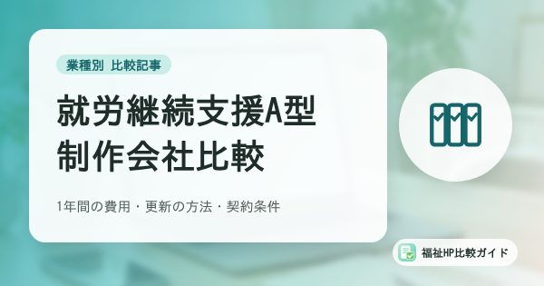
5社を比較2026年11月時点の公式情報就労継続支援A型
A型事業所向けの制作サービスを、1年間の費用・更新の方法・契約条件で比較。スコア表の公表や企業・取引先向けの情報など、A型ならではの掲載内容も解説。
比較を見る
料金
初期費用や月額費用など、費用感を分かりやすく整理します。
福祉分野への理解
福祉現場の事情を踏まえた制作対応かどうかを確認します。
デザイン
利用者・ご家族に安心感を与えるデザインかを確認します。
相談のしやすさ
問い合わせや打ち合わせのしやすさを整理します。
公開後のサポート
公開後の更新や運用サポート体制を確認します。
お役立ち記事
障害福祉の基礎知識、ホームページ制作の費用や選び方、サイバー攻撃への備え、集客・採用のコツを解説しています。
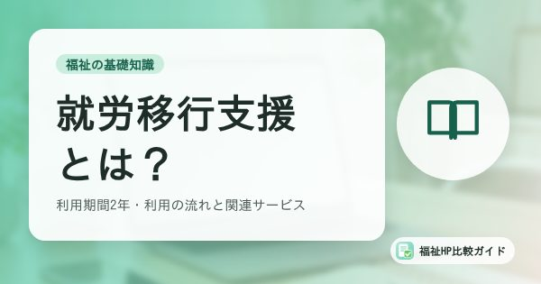
福祉の基礎知識就労移行支援とは？対象者・利用期間2年・利用の流れと、就労定着支援・就労選択支援との関係
一般企業への就職を目指す障害のある方が利用する就労移行支援について、対象者（原則65歳未満）、標準利用期間2年、訓練内容、利用料、利用開始までの流れ、就職後の就労定着支援や2027年4月から原則利用となる就労選択支援との関係を解説します。
記事を読む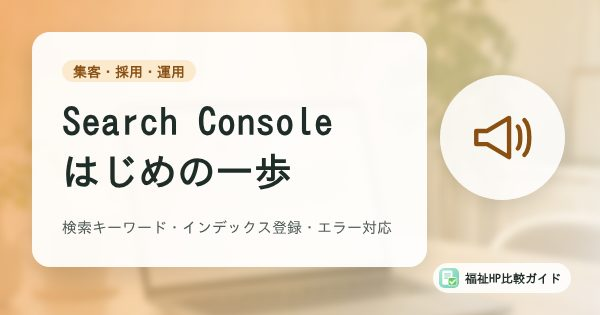
集客・採用・運用Google Search Consoleの基本｜福祉事業所が見たい検索キーワード・インデックス登録・エラー対応
Google Search Console（サーチコンソール）の始め方と、福祉事業所がまず見ておきたい検索パフォーマンス、URL検査、ページのインデックス登録の見方を、Googleの公式ヘルプをもとに解説します。制作会社に任せている場合に確認したいことも整理しました。
記事を読む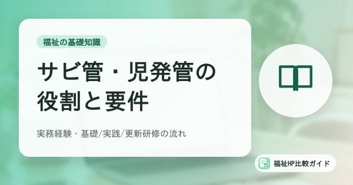
福祉の基礎知識サービス管理責任者・児童発達支援管理責任者とは｜役割・実務経験の要件・研修の流れを整理
障害福祉サービスのサービス管理責任者（サビ管）と、障害児支援の児童発達支援管理責任者（児発管）の役割、実務経験の要件、基礎・実践・更新研修の流れ、欠けたときの「みなし配置」までを、国の通知と自治体の案内をもとに整理します。
記事を読む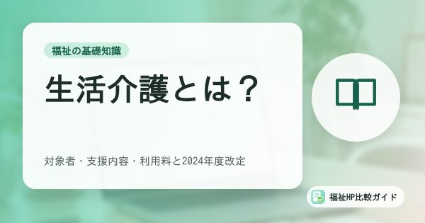
福祉の基礎知識生活介護とは？対象者（障害支援区分）・支援内容・利用料と、2024年度改定の時間区分
障害者総合支援法の生活介護について、対象となる障害支援区分（区分3以上、50歳以上は区分2以上）、日中の支援内容、利用料と実費、2024年度報酬改定で導入されたサービス提供時間ごとの基本報酬までわかりやすく解説します。
記事を読む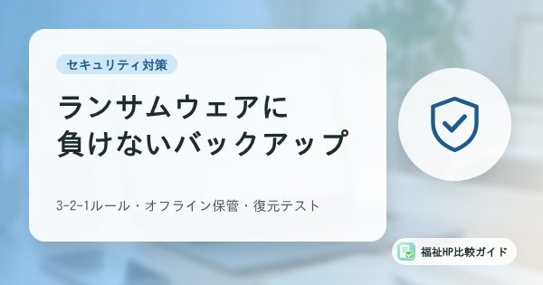
セキュリティ対策ランサムウェア対策のバックアップ入門｜福祉事業所の記録データを守る3-2-1ルールと復元テスト
ランサムウェア被害ではバックアップも暗号化され、復元できない例が多いと警察庁の調査が示しています。福祉事業所の記録や請求データを守るため、3-2-1ルール、オフライン保管、復元テストの考え方をチェックリスト付きで解説します。
記事を読む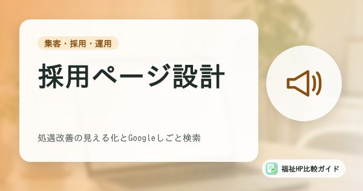
集客・採用・運用福祉事業所の採用ページ設計｜処遇改善の見える化とGoogleしごと検索（求人の構造化データ）への対応
福祉事業所の採用ページを、求職者が応募前に確認する情報から逆算して設計する方法を解説。処遇改善加算の取組の見える化、数字で見る職場、職員インタビューの質問例、求人の構造化データによるGoogleしごと検索への掲載、募集終了時の注意まで紹介します。
記事を読む免責事項
- 掲載情報は作成時点の公式情報をもとにしています。
- 料金やサービス内容は変更される場合があります。
- 契約前に各社の公式サイトで最新情報をご確認ください。
- 比較結果は特定企業の利用を保証・推奨するものではありません。